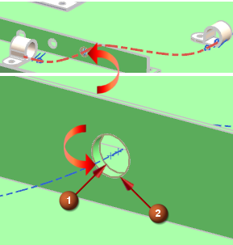
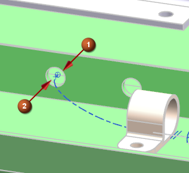
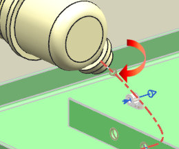
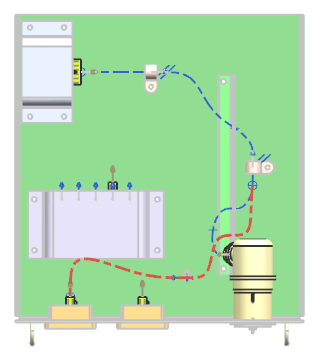

Create another path from the clamp to the backshell
-
Select the SOP on the clamp again.
-
On the Selection bar, turn on
 .
.
-
To make the path go straight through the hole in the bulkhead, select the arc center point on the side (1) that the path is entering.
Select the arc center point on the other side (2).

Note
If an Interpart Copy message window appears, select the Don't display this message again check box, and then 点击确定。
-
Use
 to select the port on the second clamp.
to select the port on the second clamp.
-
Continue routing the path through the hole shown below by selecting the two arc centers in the order indicated.

-
Complete the routing by selecting the port on the backshell.

-
点击确定。
You now need to branch off another path that goes from the second clamp, through the bulkhead, through the small clamp, and ends at the connector on the “outside” meter.
